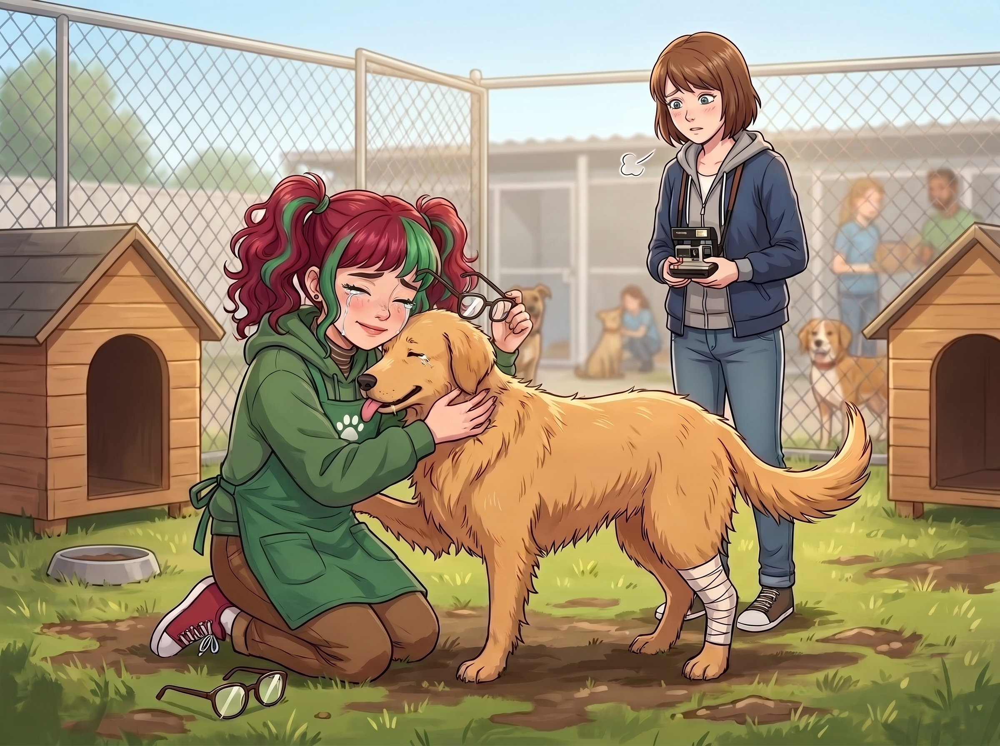

收容所的抉擇（倒敘）

為了徹底洗淨實習生靈魂裡的官僚黑魔法與階級毒素，Max 決定採取極端的物理隔離療法。在一個沒有 Victoria 和 Chloe 的週三下午，她強行拔掉了 Lily 的筆記本電腦電源，將她塞進了副駕駛座，一路開到了波特蘭郊區一家資金匱乏、設施破舊的流浪動物收容所。
「聽著，Lily。今天沒有 FOIA，沒有法規，也沒有階級鬥爭。」Max 給 Lily 穿上一件沾著狗毛的綠色義工圍裙，遞給她一把梳子，「今天只有沒有心機的毛小孩，以及純粹的愛與和平。」
一、暫時的成功
一開始，療程進行得非常完美。
當一隻因為車禍失去了一條後腿、名叫巴迪的黃金獵犬混血兒，用濕漉漉的鼻子溫柔地蹭著 Lily 的掌心時，這位波特蘭地下公關總監的眼眶瞬間紅了。她摘下那副厚重的圓框眼鏡，毫無防備地坐在滿是泥土的草地上，把臉埋進巴迪的脖子裡，笑得像個真正十九歲的單純女孩。
站在不遠處拿著相機的 Max 長長地舒了一口氣。她覺得自己終於從 Chloe 和 Victoria 手裡，成功搶救回了這個純潔的靈魂。
但阿卡迪亞灣的詛咒，從來不會輕易放過她們。
二、突發狀況
下午三點，一輛印著波特蘭動物管制局的白色廂型車在收容所門口發出刺耳的煞車聲。一個穿著制服、滿臉橫肉的督察官帶著兩名拿著捕狗網的執法人員，一腳踢開了鐵絲網大門。
「這家收容所的衛生許可證已經過期三天了。」督察官冷酷地向年邁的所長出示了一份文件，然後指著正在草地上跟 Lily 玩耍的幾隻狗，包括那隻三條腿的巴迪，「根據第 709 號市政防疫條例，這幾隻沒有完整疫苗接種記錄、且被標記為具備潛在攻擊性的殘障犬隻，必須立刻被沒收並進行人道銷毀。把牠們裝上車。」
年邁的所長急得快哭了，拼命解釋疫苗只是因為經費延遲還在路上，但督察官無動於衷，執法人員已經舉著網子走向了巴迪。
Max 的心臟猛地揪緊。她衝上前，試圖用她那毫無威懾力的聲音講道理，甚至考慮著要不要在這裡強行發動時間倒流。但連續發動能力會讓她的大腦撕裂般疼痛，而且她無法保證改變過去能解決這個體制內的死結。
就在執法人員的網子即將罩住發抖的巴迪時，一隻白皙、纖細的手，精準地握住了網子的不鏽鋼長柄。
三、深淵巨獸的甦醒
Max 轉過頭，看到了讓她永生難忘的一幕。
Lily 沒有發抖。她緩緩站起身，將巴迪護在身後。她把那副厚重的圓框眼鏡重新推回鼻樑上，原本充滿純真與憐憫的大眼睛裡，某種被 Max 強行封印的深淵巨獸，在此刻徹底甦醒了。
「Max 學姐，」Lily 沒有回頭，聲音平靜得像暴風雨來臨前的海面，「我本來想做個好人的。」
「Lily……」Max 嚥了一口口水。
「但我現在發現，這個世界上的某些垃圾，不配得到愛與和平。」Lily 微微側過頭，用眼角餘光看著 Max，嘴角勾起一抹完美融合了 Victoria 傲慢與 Chloe 瘋狂的冷笑，「解開封印吧，Max 學姐。允許我用黑魔法，把他們送進行政地獄。」
看著夾著尾巴發抖的殘障小狗，以及眼前傲慢的官僚，Max 咬了咬牙，徹底放棄了最後一絲道德潔癖。她後退了一步，舉起相機。
「准了。讓他們見識一下二號車廂的實力。」
四、海豹突擊隊與聯邦重罪
Lily 深吸了一口氣。當她再次轉向督察官時，她已經完美切換到了 Kate 式天使領域與 Chase 財團首席法務的究極融合形態。
「督察官先生，您好。」Lily 雙手交握在胸前，露出一個悲憫且極度溫柔的微笑，「我非常理解您急於完成本月銷毀指標、以換取微薄績效獎金的迫切心情。但請允許我提醒您，您剛才試圖用網子捕捉的這隻三腳犬，並非普通的流浪狗。」
督察官皺起眉頭：「少廢話，牠沒有疫苗證明！」
「牠不需要這家收容所的證明。」Lily 語氣輕柔，卻字字致命，「這隻狗目前的合法身分是美國聯邦政府登記在冊、針對重度戰鬥創傷後遺症退伍軍人的預備情緒撫慰犬。牠的主人是前海豹突擊隊成員、目前受僱於 Chase 財團的首席安保顧問 Chloe Price 女士。牠的專屬醫療記錄在國防部下屬的私人獸醫系統裡。」
Max 在一旁聽得目瞪口呆，差點沒忍住笑出聲：Chloe 什麼時候變成海豹突擊隊了？！
但 Lily 的謊言編織得太過完美、太過理直氣壯，以至於督察官當場愣住了。
「我不管牠是誰的狗，這裡歸波特蘭市政管！」督察官色厲內荏地吼道。
Lily 嘆了口氣，那眼神彷彿在看一個即將走上電椅的死囚：「您當然可以帶走牠。不過，這將意味著您和您的兩位下屬，正式違反了《美國身心障礙者法案》第 3 條。根據聯邦法律，非法剝奪退伍軍人的醫療輔助犬，是聯邦重罪。」
Lily 向前逼近了一步，天使般的笑容裡透出森森寒意：「除此之外，您剛才提到了人道銷毀。請問您車上攜帶的戊巴比妥鈉，是否有美國緝毒局的二級管制藥物現場使用授權書？如果沒有，您就是在進行未經授權的受控藥物運輸。您知道嗎？就在此時此刻，Chase 財團的律師團已經準備好向緝毒局和聯邦法院提交聯合訴狀了。您覺得，市政廳會為了一個基層督察官，去跟聯邦緝毒局和身價百億的財團打官司嗎？還是會直接把您開除，剝奪您的退休金，讓您成為平息輿論的替罪羊？」
一連串精準的聯邦法案、緝毒局管制條例以及財團威脅，像密集的重機槍子彈一樣，將這個只會欺負老弱婦孺的基層官僚打得千瘡百孔。
督察官的臉色從通紅變成了慘白，他看著眼前這個穿著綠色圍裙、笑容甜美卻滿嘴聯邦重罪的女孩，感覺自己踢到了一塊由振金打造的鐵板。
「這……這可能是一場誤會……」督察官的聲音開始發抖，他慌亂地給了手下一個眼神，執法人員立刻像觸電一樣收回了網子。
「我們……我們只是來進行常規口頭警告的。疫苗記錄……請在一個月內補齊。我們走！」
五、不需要被治癒
看著那輛白色廂型車像見了鬼一樣落荒而逃，揚起一陣灰塵，收容所的草地再次恢復了平靜。
Lily 站在原地，閉上眼睛深吸了一口氣。然後，她轉過身，重新蹲在地上，溫柔地撫摸著巴迪的腦袋，聲音又變回了那個軟糯的十九歲女孩：「沒事了，巴迪，壞人都被趕跑了哦。」
Max 默默地放下相機，走到 Lily 身邊，跟著她一起蹲在草地上。
「Lily。」
「在，Max 學姐。」Lily 抬起頭，有些心虛地絞著圍裙的帶子，「對不起，我還是破功了。我用了恐嚇、階級施壓，還偽造了聯邦身分……Kate 學姐知道了會對我失望的。」
「不。」Max 伸出手，輕輕揉了揉實習生的腦袋，嘴角揚起一抹釋懷的微笑，「Kate 會給妳烤一個最大號的肉桂捲，而 Chloe 會因為妳給她編造的海豹突擊隊頭銜高興得在車廂裡後空翻。」
Max 看著搖著尾巴的殘障小狗，終於明白了一個道理。
在一個並不完美、甚至充滿惡意的世界裡，純粹的愛與和平是無法保護弱者的。只有掌握了惡龍的語言，擁有了比魔鬼更精密的獠牙，才能在這個殘酷的體制裡，為那些無聲的生靈撐起一把傘。
「Lily，妳不需要被治癒。」Max 輕聲說道，語氣裡充滿了對這個完美兵器的驕傲與接納，「保留妳的黑魔法吧。只要妳的槍口永遠對準那些欺凌弱小的混蛋，妳就是我們二號車廂最純潔的天使。」
故事的時間點，實際發生在第二季波特蘭工坊時期